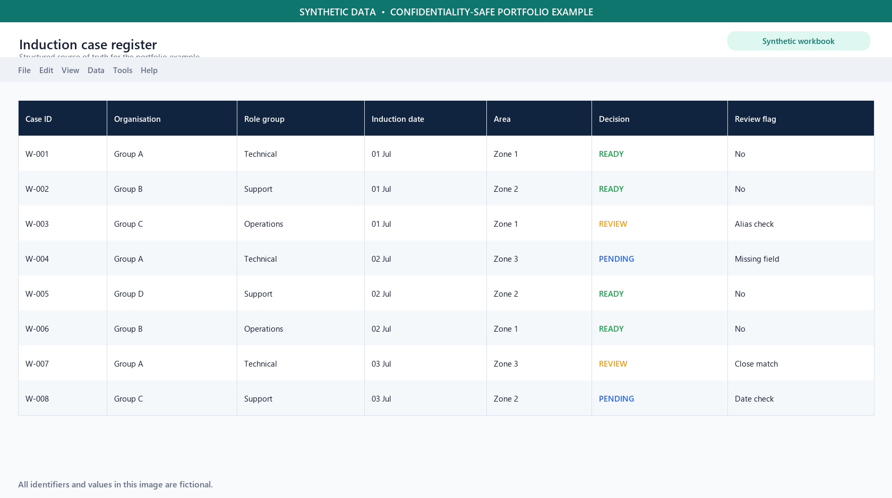
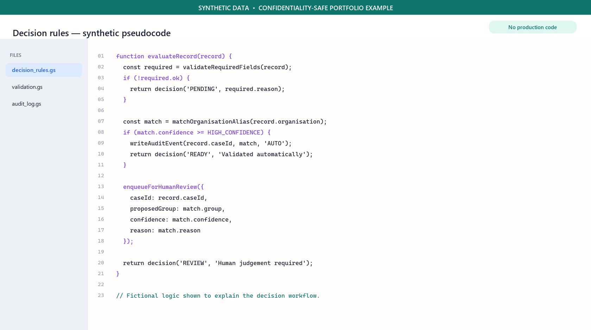
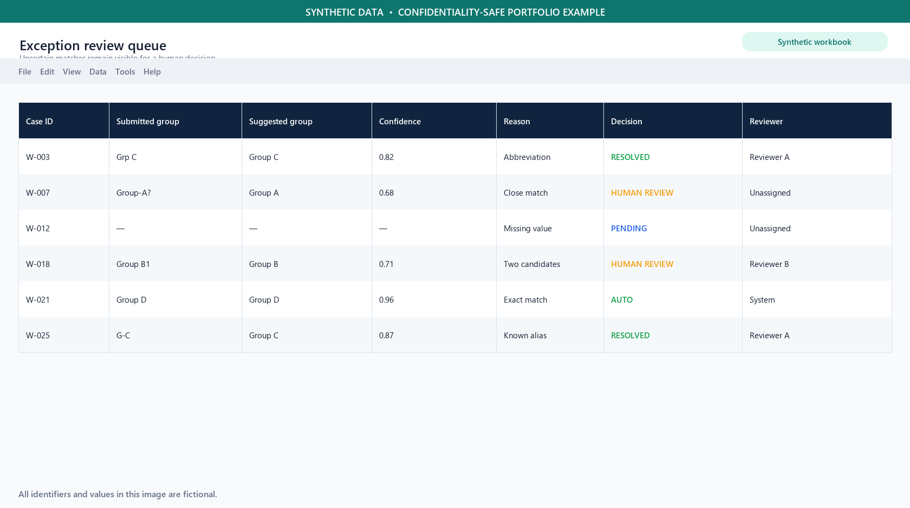
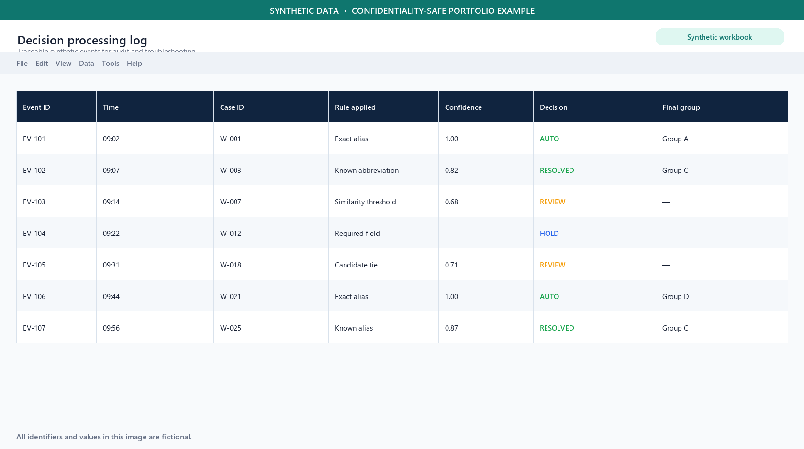
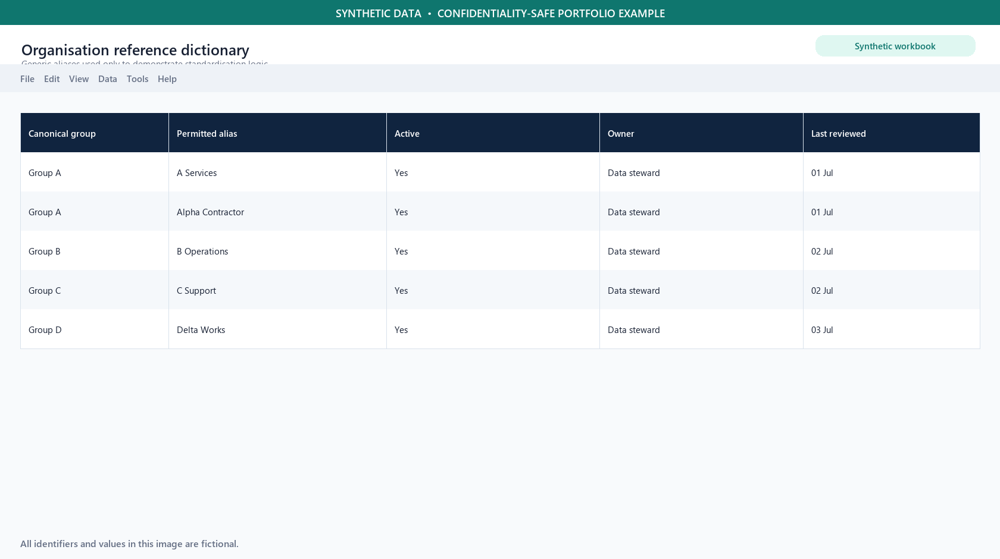
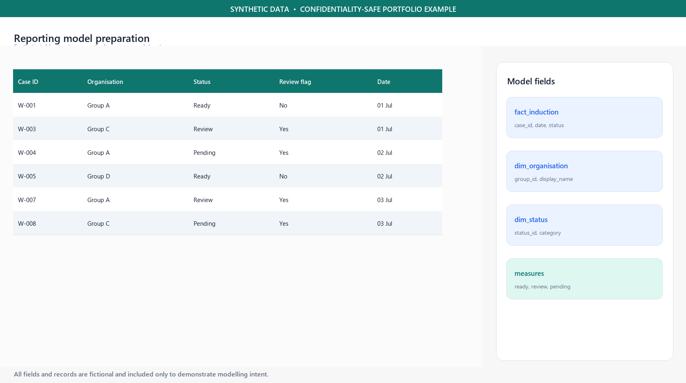
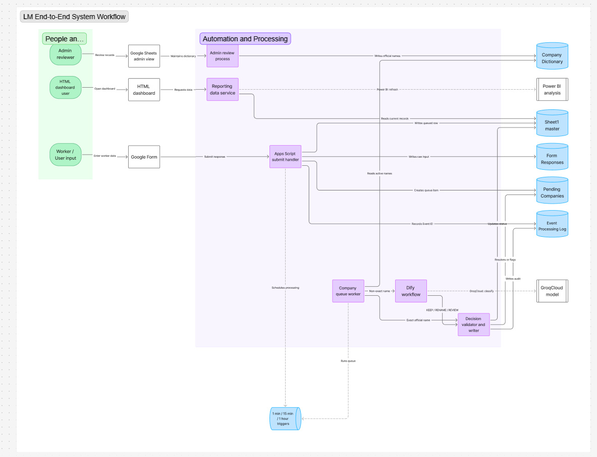

One process. One record. One status board.
Intake, tracking, and reporting in one place: a central sheet, light automation, and a visual dashboard so induction status is easy to check and discuss.
-
Unified intake
Standardised fields captured at induction so every record starts the same way.
-
Central Google Sheet
One shared source of truth the team can open anytime.
-
Apps Script automation
Less manual handling, records stay current with less effort.
-
HTML operations dashboard
Status that is easy to monitor, share, and talk through.
From worker input to a usable daily view.
The portfolio keeps the main story readable; the detailed architecture remains available below.
- 01Google FormWorker input
- 02Apps ScriptValidate and process
- 03Google SheetsSource of truth
- 04HTML dashboardDaily operations
- 05Power BIPlanned reporting
What I worked with day to day.
The operational screens behind the dashboard: maintaining records, building automation, resolving exceptions, and preparing the next reporting layer.






